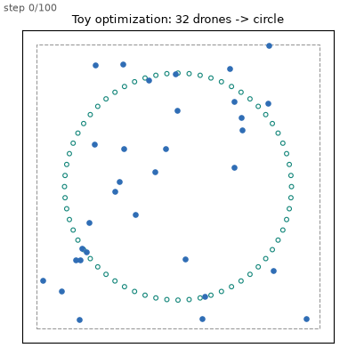
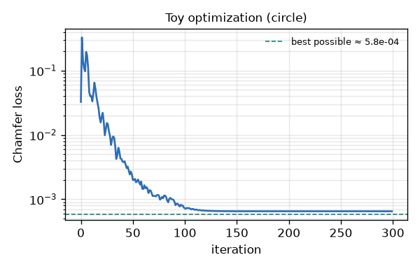

<meta charset="utf-8">
<title>Phase 1 Math</title>
<meta name="claude:viewport-fit-sides" content="cover">
<link rel="stylesheet" href="https://fonts.googleapis.com/css2?family=Space+Grotesk:wght@500;700&family=IBM+Plex+Sans:ital,wght@0,400;0,500;0,600;1,400&family=IBM+Plex+Mono:wght@400;500&display=swap">
<script>
  window.MathJax = {
    tex: { inlineMath: [["\\(", "\\)"]], displayMath: [["\\[", "\\]"]] },
    svg: { fontCache: "global" },
    options: { skipHtmlTags: ["script", "style", "textarea", "code"] }
  };
</script>
<script src="https://cdn.jsdelivr.net/npm/mathjax@3.2.2/es5/tex-svg.js" async></script>
<style>
  /* Layout: one reading column of derivations, a lab-notebook feel; one interactive figure for the loss */
  :root {
    --bg: #F7F8FA; --panel: #FFFFFF; --edge: #DCE1E8; --fg: #1C2430; --muted: #5A6578;
    --accent: #2F6DB5; --grad: #C2412F; --target: #13867A; --tint: #EAF1FA;
    --display: "Space Grotesk", system-ui, sans-serif;
    --body: "IBM Plex Sans", system-ui, sans-serif;
    --mono: "IBM Plex Mono", ui-monospace, Menlo, monospace;
  }
  @media (prefers-color-scheme: dark) { :root:not([data-theme="light"]) {
    --bg: #10151C; --panel: #171E27; --edge: #2A3340; --fg: #E4E8EE; --muted: #98A2B3;
    --accent: #78A9E8; --grad: #E8806C; --target: #45C2B0; --tint: #1A2636; color-scheme: dark } }
  :root[data-theme="dark"] {
    --bg: #10151C; --panel: #171E27; --edge: #2A3340; --fg: #E4E8EE; --muted: #98A2B3;
    --accent: #78A9E8; --grad: #E8806C; --target: #45C2B0; --tint: #1A2636; color-scheme: dark }

  body { background: var(--bg); color: var(--fg); font-family: var(--body); font-size: 16px; line-height: 1.65;
    padding-left: max(16px, env(safe-area-inset-left, 0px)); padding-right: max(16px, env(safe-area-inset-right, 0px));
    padding-block: 40px 80px; }
  main { max-width: 760px; margin: 0 auto; display: grid; gap: 56px; }
  header { display: grid; gap: 12px; }
  .eyebrow { font-family: var(--mono); font-size: 12.5px; letter-spacing: .08em; text-transform: uppercase; color: var(--accent); }
  h1 { font-family: var(--display); font-size: clamp(30px, 5vw, 42px); line-height: 1.1; margin: 0; text-wrap: balance; }
  h2 { font-family: var(--display); font-size: 24px; line-height: 1.25; margin: 0; text-wrap: balance; }
  h3 { font-family: var(--display); font-size: 18px; margin: 8px 0 0; }
  section { display: grid; gap: 14px; scroll-margin-top: 16px; min-width: 0; }
  p { margin: 0; }
  .lede { color: var(--muted); font-size: 17px; }
  code { font-family: var(--mono); font-size: .88em; background: var(--tint); padding: 1px 5px; border-radius: 4px; }
  mjx-container[display="true"] { overflow-x: auto; overflow-y: hidden; max-width: 100%; padding-block: 4px; margin: 4px 0 !important; }
  .answer { background: var(--panel); border: 1px solid var(--edge); border-left: 4px solid var(--accent); border-radius: 6px; padding: 18px 20px; display: grid; gap: 10px; }
  .answer strong { font-family: var(--display); font-size: 17px; }
  .note { font-size: 14.5px; color: var(--muted); }
  .why { border-top: 1px solid var(--edge); padding-top: 12px; font-size: 15px; color: var(--muted); }
  .why b { color: var(--fg); font-weight: 600; }
  .tbl { overflow-x: auto; border: 1px solid var(--edge); border-radius: 6px; background: var(--panel); }
  table { border-collapse: collapse; width: 100%; font-size: 14.5px; font-variant-numeric: tabular-nums; }
  th, td { text-align: left; padding: 8px 12px; border-bottom: 1px solid var(--edge); vertical-align: top; }
  th { font-weight: 600; color: var(--muted); font-size: 13px; letter-spacing: .03em; }
  tr:last-child td { border-bottom: 0; }
  td.num { text-align: right; font-family: var(--mono); }
  ol.algo { margin: 0; padding-left: 22px; display: grid; gap: 6px; }
  nav { display: flex; flex-wrap: wrap; gap: 6px 14px; font-size: 14px; }
  nav a { color: var(--accent); text-decoration: none; }
  nav a:hover, nav a:focus-visible { text-decoration: underline; outline: none; }

  /* interactive Chamfer figure */
  .lab { background: var(--panel); border: 1px solid var(--edge); border-radius: 8px; padding: 16px; display: grid; gap: 14px; }
  .lab-grid { display: grid; grid-template-columns: minmax(0, 1fr) 220px; gap: 18px; align-items: start; }
  @media (max-width: 640px) { .lab-grid { grid-template-columns: 1fr; } }
  svg#field { width: 100%; max-width: 440px; aspect-ratio: 1; display: block; margin: 0 auto; touch-action: none; user-select: none; }
  .readout { display: grid; gap: 10px; font-size: 14px; min-width: 0; }
  .stat { display: grid; gap: 2px; }
  .stat span { color: var(--muted); font-size: 12.5px; letter-spacing: .03em; }
  .stat output { font-family: var(--mono); font-size: 20px; font-variant-numeric: tabular-nums; }
  .stat.total output { font-size: 24px; font-weight: 500; }
  .controls { display: flex; flex-wrap: wrap; gap: 8px; }
  button { font: 500 13.5px var(--body); color: var(--fg); background: var(--bg); border: 1px solid var(--edge); border-radius: 6px; padding: 6px 12px; cursor: pointer; }
  button:hover { border-color: var(--muted); }
  button:focus-visible, input:focus-visible { outline: 2px solid var(--accent); outline-offset: 2px; }
  button[aria-pressed="true"] { background: var(--accent); color: var(--panel); border-color: var(--accent); }
  .toggles { display: grid; gap: 6px; font-size: 13.5px; }
  .toggles label { display: flex; gap: 8px; align-items: center; cursor: pointer; }
  .sw { display: inline-block; width: 18px; height: 0; border-top: 2px solid; }
  .sw.a { border-color: var(--accent); } .sw.b { border-color: var(--target); border-top-style: dashed; } .sw.g { border-color: var(--grad); }
  .diagram { overflow-x: auto; background: var(--panel); border: 1px solid var(--edge); border-radius: 8px; padding: 8px; }
  .diagram svg { display: block; width: 100%; min-width: 640px; height: auto; }
  .dg-box { fill: var(--panel); stroke: var(--edge); stroke-width: 1.5; }
  .dg-runner { fill: var(--tint); stroke: var(--accent); stroke-width: 2; }
  .dg-mod { stroke: var(--accent); }
  .dg-out { stroke: var(--target); }
  .dg-test { stroke-dasharray: 5 4; }
  .dg-loop { fill: none; stroke: var(--accent); stroke-dasharray: 5 4; stroke-width: 1.2; }
  .dg-title { font: 600 13px var(--mono); fill: var(--fg); }
  .dg-fn { font: 11px var(--mono); fill: var(--fg); }
  .dg-grad { fill: var(--grad); }
  .dg-note { font: italic 11px var(--body); fill: var(--muted); }
  .dg-loop-lbl { font: italic 600 11px var(--body); fill: var(--accent); }
  .dg-line { fill: none; stroke: var(--muted); stroke-width: 1.5; }
  .dg-head { fill: var(--muted); }
  .dg-lbl { font: 10.5px var(--body); fill: var(--muted); text-anchor: middle; }
  .dg-ret { font: 10.5px var(--body); fill: var(--target); text-anchor: middle; }
  figure.result { margin: 0; display: grid; grid-template-columns: minmax(0, 2fr) minmax(0, 3fr); gap: 12px; align-items: center; background: #FFFFFF; border: 1px solid var(--edge); border-radius: 8px; padding: 12px; }
  figure.result img { width: 100%; height: auto; }
  figure.result figcaption { grid-column: 1 / -1; font-size: 13.5px; color: #5A6578; }
  figure.result.wide, figure.result.gifs { grid-template-columns: 1fr; }
  @media (max-width: 560px) { figure.result { grid-template-columns: 1fr; } }
  .chip { display: inline-block; font: 500 11.5px var(--mono); letter-spacing: .03em; padding: 1px 8px; border-radius: 999px; border: 1px solid currentColor; vertical-align: middle; white-space: nowrap; }
  .chip.done { color: var(--target); } .chip.next { color: var(--accent); } .chip.todo { color: var(--muted); }
  .part { display: grid; gap: 12px; border-top: 2px solid var(--accent); padding-top: 40px; scroll-margin-top: 16px; }
  .part nav { margin-top: 4px; }
  footer { color: var(--muted); font-size: 13.5px; border-top: 1px solid var(--edge); padding-top: 16px; }
</style>

<main>
  <header>
    <div class="eyebrow">CMSC 838B · Swarm project · Phase 1 walkthrough</div>
    <h1>The math behind the toy optimization</h1>
    <p class="lede">Every formula Phase 1 uses, from the target circle to the gradient that reaches the accelerations. Numbers use our config: N = 32, T = 100, Δt = 0.05, c = 0.5, a<sub>max</sub> = 2.</p>
    <nav aria-label="Sections">
      <a href="#problem">The problem</a><a href="#target">Target</a><a href="#actions">Actions</a>
      <a href="#dynamics">Dynamics</a><a href="#loss">Loss</a><a href="#lossgrad">Loss gradient</a>
      <a href="#bptt">Backprop through time</a><a href="#adam">Adam</a><a href="#algo">Full loop</a><a href="#files">How the files fit</a><a href="https://claude.ai/artifact/DoDkqRi5Rw5ZVXvhZJwcmT"><strong>Phase 2 walkthrough →</strong></a>
    </nav>
  </header>

  <div class="answer">
    <strong>Do we assign each drone a point on the circle?</strong>
    <p>No. Nobody gets a fixed spot. The loss is the <em>Chamfer distance</em>, which asks two questions about the whole swarm: is every drone close to <em>some</em> point of the circle, and is every point of the circle close to <em>some</em> drone? Each drone is pulled toward whichever circle point is nearest to it right now, and that choice is recomputed on every iteration. Section 5 explains it, and you can try it on the interactive figure there.</p>
  </div>

  <!-- 1 -->
  <section id="problem">
    <h2>1. The whole problem in one line</h2>
    <p>We pick a sequence of raw numbers \(r\), turn them into accelerations, simulate, and score the final positions against the target shape. Phase 1 solves:</p>
    \[ \min_{r}\; L\big(p_T(r),\, Q\big) \]
    <p>where \(r \in \mathbb{R}^{T \times N \times 2}\) holds one 2D raw action per agent per step (100 × 32 × 2 = 6,400 numbers), \(p_T\) is the agents' final positions after \(T\) steps, \(Q\) is the target point set, and \(L\) is the Chamfer loss.</p>
    <div class="tbl"><table>
      <thead><tr><th>Symbol</th><th>Meaning</th><th>Shape / value</th></tr></thead>
      <tbody>
        <tr><td>\(p_{t,i},\ v_{t,i}\)</td><td>position and velocity of agent \(i\) at step \(t\)</td><td>\(\mathbb{R}^2\)</td></tr>
        <tr><td>\(a_{t,i}\)</td><td>acceleration (the action)</td><td>\(\mathbb{R}^2\), \(\lVert\cdot\rVert_\infty \le 2\)</td></tr>
        <tr><td>\(r_{t,i}\)</td><td>raw parameter we optimize</td><td>\(\mathbb{R}^2\), starts at 0</td></tr>
        <tr><td>\(q_j\)</td><td>target point \(j\)</td><td>\(M = 2N = 64\) points</td></tr>
        <tr><td>\(\Delta t,\ T,\ c\)</td><td>time step, number of steps, damping</td><td>0.05 s, 100, 0.5</td></tr>
        <tr><td>\(\lambda = 1 - c\,\Delta t\)</td><td>fraction of velocity kept each step</td><td>0.975</td></tr>
      </tbody>
    </table></div>
  </section>

  <!-- 2 -->
  <section id="target">
    <h2>2. The target is a set of points</h2>
    <p>A shape is just a cloud of points. For the circle, <code>shapes.py</code> places \(M\) points evenly around a circle of radius 0.4:</p>
    \[ q_j = 0.4\,\big(\cos\theta_j,\ \sin\theta_j\big), \qquad \theta_j = \frac{2\pi j}{M}, \quad j = 0, \dots, M-1 \]
    <p>With \(M = 64\) the neighboring points sit \(2 \cdot 0.4 \sin(\pi/64) \approx 0.039\) apart, so the circle is densely described. Any shape (square, letter, a drawing) works the same way, which is why the loss never needs to know what the shape "is".</p>
    <p class="why"><b>Why \(M = 2N\):</b> more target points than agents makes the shape smooth. A side effect is shown in section 5: the loss can't reach exactly 0, because 32 agents can't sit on 64 points.</p>
  </section>

  <!-- 3 -->
  <section id="actions">
    <h2>3. What we optimize: accelerations, written as \(r\)</h2>
    <p><strong>We are optimizing the accelerations.</strong> There are 32 drones × 100 steps × 2 directions (x, y) = 6,400 accelerations: what each drone's motors do at each moment. \(r\) is just a different way of writing those same 6,400 numbers so that they can never break the motor limit.</p>
    <h3>The limit: \(a_{\max} = 2\)</h3>
    <p>A drone can't accelerate faster than 2 units/s² in x or in y, just as a real drone has a maximum motor thrust. Without a limit the optimizer would cheat: it would pick \(a = 5000\) at step 0 and every drone would jump onto the circle in one frame. The limit forces the drones to plan their motion over time. It doesn't make the task impossible: the box is 1 unit wide, and 2 units/s² for 5 s is far more than enough to cross it.</p>
    <h3>\(r\) is a knob behind each acceleration</h3>
    <p>Each acceleration is computed from its own raw number:</p>
    \[ a_{t,i} = a_{\max} \tanh(r_{t,i}) \qquad \text{(applied to each coordinate)} \]
    \[ \frac{\partial a_{t,i}}{\partial r_{t,i}} = a_{\max}\big(1 - \tanh^2(r_{t,i})\big) \]
    <div class="tbl"><table>
      <thead><tr><th>\(r\)</th><th>\(a = 2\tanh(r)\)</th></tr></thead>
      <tbody>
        <tr><td class="num">0</td><td class="num">0</td></tr>
        <tr><td class="num">0.55</td><td class="num">1.00</td></tr>
        <tr><td class="num">1</td><td class="num">1.52</td></tr>
        <tr><td class="num">3</td><td class="num">1.99</td></tr>
        <tr><td class="num">−1</td><td class="num">−1.52</td></tr>
        <tr><td class="num">1000</td><td class="num">2.00 (never more)</td></tr>
      </tbody>
    </table></div>
    <p>Each \(r\) gives exactly one \(a\), and each \(a\) in \((-2, 2)\) comes from exactly one \(r\). <strong>Choosing \(r\) is the same as choosing \(a\)</strong>, but no value of \(r\) can break the limit. Adam can move \(r\) anywhere and every acceleration stays inside \([-2, 2]\), with a smooth mapping. At \(r = 0\), where we start, the slope is at its maximum \(a_{\max} = 2\). If some \(r\) grows very large, the slope goes to 0 and that action stops learning. This is called saturation.</p>
    <h3>Why not optimize \(a\) directly?</h3>
    <p>Then we would need a separate rule to keep \(a\) inside \([-2, 2]\):</p>
    <p><strong>Clip inside the simulator</strong> (<code>clamp(a, -2, 2)</code>): once an action goes past 2, its gradient becomes exactly 0, so it is stuck at 2 forever. tanh always has a nonzero slope, so an action can always recover.</p>
    <p><strong>Clip after each Adam step:</strong> this works fine for Phase 1.</p>
    <p>The real reason is <strong>Phase 2</strong>. There a neural network produces the accelerations, and a network outputs arbitrary numbers, so we put the same \(a = 2\tanh(\cdot)\) on its output. Using \(r\) with tanh now means the toy test already exercises the exact path the policy will use. Only the source of \(r\) changes:</p>
    \[ \text{Phase 1: } r = \text{6,400 free numbers} \;\longrightarrow\; a = 2\tanh(r) \;\longrightarrow\; \text{simulator} \]
    \[ \text{Phase 2: } r = \mathrm{MLP}_\theta(o_i) \;\longrightarrow\; a = 2\tanh(r) \;\longrightarrow\; \text{simulator} \]
  </section>

  <!-- 4 -->
  <section id="dynamics">
    <h2>4. The dynamics, and why the final position is linear in the actions</h2>
    <h3>4a. What \(c\) is, and where \(\lambda\) comes from</h3>
    <p>\(c\) is the <strong>damping coefficient</strong>, which you can think of as air drag, in units of 1/s. It sets how fast a drone loses speed when it isn't thrusting. In continuous time, thrust speeds the drone up and drag slows it down in proportion to its speed:</p>
    \[ \frac{dv}{dt} = a - c\,v \]
    <p>The simulator takes steps of length \(\Delta t\) using Euler's method (new value = old value + \(\Delta t\) × rate of change):</p>
    \[ v_{t+1} = v_t + \Delta t\,(a_t - c\,v_t) = \underbrace{(1 - c\,\Delta t)}_{\lambda}\, v_t + \Delta t\, a_t \]
    <p>So \(\lambda = 1 - c\,\Delta t\) is <strong>the fraction of velocity a drone keeps after one step</strong>. With \(c = 0.5\) and \(\Delta t = 0.05\), \(\lambda = 0.975\): the drone keeps 97.5% of its speed and loses 2.5% each step.</p>
    <p class="why"><b>Physically:</b> with the motors off, speed halves every \(\ln 2 / c \approx 1.4\) s (about 28 steps). At full thrust, drag balances thrust at a top speed of \(a_{\max}/c = 4\) units/s.</p>
    <p>Position then moves by the new velocity. Together these two lines are one call to <code>sim.step</code>:</p>
    \[ v_{t+1} = \lambda\, v_t + \Delta t\, a_t \qquad\qquad p_{t+1} = p_t + \Delta t\, v_{t+1} \]

    <h3>4b. Velocity is a decaying sum, like a momentum buffer</h3>
    <p>The velocity update has the same form as momentum in gradient descent, with \(\lambda\) in place of \(\beta\) and the acceleration in place of the gradient:</p>
    \[ v_{t+1} = \lambda\, v_t + \Delta t\, a_t \qquad\text{vs.}\qquad m_{t+1} = \beta\, m_t + g_t \]
    <p>Unroll it from rest (\(v_0 = 0\)):</p>
    \[ \begin{aligned} v_1 &= \Delta t\,a_0 \\ v_2 &= \lambda v_1 + \Delta t\,a_1 = \Delta t\,(\lambda a_0 + a_1) \\ v_3 &= \lambda v_2 + \Delta t\,a_2 = \Delta t\,(\lambda^2 a_0 + \lambda a_1 + a_2) \end{aligned} \]
    <p>Each past acceleration is discounted by \(\lambda\) once for every step since it happened:</p>
    \[ v_{t+1} = \Delta t \sum_{s=0}^{t} \lambda^{\,t-s}\, a_s \]
    <div class="tbl"><table>
      <thead><tr><th>Drone simulator</th><th>Gradient descent with momentum (heavy ball)</th></tr></thead>
      <tbody>
        <tr><td>velocity \(v\)</td><td>momentum buffer \(m\)</td></tr>
        <tr><td>acceleration \(a\)</td><td>negative gradient \(-g\)</td></tr>
        <tr><td>\(\lambda = 1 - c\,\Delta t\)</td><td>\(\beta\)</td></tr>
        <tr><td>position \(p\)</td><td>parameters \(\theta\)</td></tr>
      </tbody>
    </table></div>
    <p>So the drones move exactly like an optimizer with momentum. The difference is that here we choose the "gradients" (the accelerations), and the real optimizer, Adam, works one level up, tuning those 6,400 numbers.</p>

    <h3>4c. Position is a sum of those sums</h3>
    <p>Position adds up the velocities: \(p_T = p_0 + \Delta t\,(v_1 + v_2 + \dots + v_T)\). Written out for \(T = 3\), using the velocities above:</p>
    \[ p_3 = p_0 + \Delta t^2 \big[\, \underbrace{(1 + \lambda + \lambda^2)}_{\text{weight of } a_0}\, a_0 \;+\; \underbrace{(1 + \lambda)}_{\text{weight of } a_1}\, a_1 \;+\; \underbrace{1}_{\text{weight of } a_2}\cdot a_2 \,\big] \]
    <p>Each action ends up multiplied by its own weight. That weight is \(w_s\).</p>

    <h3>4d. Where \(w_s\) comes from</h3>
    <p>Follow a single action \(a_s\). At step \(s\) it adds a velocity kick of \(\Delta t\, a_s\). That kick then moves the drone on every remaining step, shrinking by \(\lambda\) each time. Over the \(T - s\) steps left, it adds this much to the final position:</p>
    \[ w_s = \Delta t^2 \big(1 + \lambda + \lambda^2 + \dots + \lambda^{\,T-1-s}\big) = \Delta t^2 \sum_{k=0}^{T-1-s} \lambda^{k} \]
    <p>That is a geometric series, \(\sum_{k=0}^{n-1}\lambda^k = \frac{1-\lambda^n}{1-\lambda}\). Using \(1 - \lambda = c\,\Delta t\):</p>
    \[ w_s = \Delta t^2\, \frac{1 - \lambda^{\,T-s}}{1-\lambda} = \frac{\Delta t}{c}\big(1 - \lambda^{\,T-s}\big) \]
    <p>Summing over all actions gives the final position:</p>
    \[ p_T = p_0 + \sum_{s=0}^{T-1} w_s\, a_s \qquad\qquad \frac{\partial p_T}{\partial a_s} = w_s \]
    <p>\(w_s\) is <strong>how far the final position moves per unit of acceleration applied at step \(s\)</strong>. Because \(\partial p_T / \partial a_s = w_s\), it is also exactly the size of the gradient each action receives.</p>
    <p>This is the key fact of Phase 1. <strong>Each agent's final position is a weighted sum of its own accelerations.</strong> The weight \(w_s\) says how far the final position moves per unit of acceleration applied at step \(s\).</p>
    <div class="tbl"><table>
      <thead><tr><th>Action at step</th><th>\(w_s = 0.1\,(1 - 0.975^{\,100-s})\)</th><th>Relative to the last step</th></tr></thead>
      <tbody>
        <tr><td>\(s = 0\) (first)</td><td class="num">0.0920</td><td class="num">36.8×</td></tr>
        <tr><td>\(s = 50\)</td><td class="num">0.0718</td><td class="num">28.7×</td></tr>
        <tr><td>\(s = 99\) (last)</td><td class="num">0.0025</td><td class="num">1×</td></tr>
      </tbody>
    </table></div>
    <p>These are the same ratios our gradient check in <code>sim.py</code> printed (0.838 : 0.654 : 0.023). Early actions matter more because they have more time to turn into displacement.</p>
    <p class="why"><b>Damping caps the weights.</b> Since \(\lambda &lt; 1\), the sum is bounded: \(w_s \le \Delta t / c = 0.1\) no matter how long \(T\) is. Without damping (\(c = 0\)) the weight would be \(w_s = \Delta t^2 (T - s)\), which keeps growing with \(T\). That is the first defense against exploding gradients.</p>
    <p class="why"><b>Every agent can reach the circle.</b> Full throttle for the whole rollout moves an agent \(a_{\max}\sum_s w_s \approx 2 \times 6.41 \approx 12.8\) units, and the box is only 1 unit wide. Also, there are 200 numbers per agent but only 2 coordinates of final position to hit, so many different acceleration sequences give the same answer. Adam just finds one of them. Phase 2 adds an effort penalty to prefer gentle ones.</p>
  </section>

  <!-- 5 -->
  <section id="loss">
    <h2>5. The loss: Chamfer distance</h2>
    <p>Let \(P = \{p_{T,1}, \dots, p_{T,N}\}\) be the final agent positions and \(Q = \{q_1, \dots, q_M\}\) the target points. First compute every agent-to-target squared distance. In code this is <code>torch.cdist(P, Q) ** 2</code>, an \(N \times M\) matrix:</p>
    \[ D_{ij} = \lVert p_i - q_j \rVert^2 \]
    <p class="note">The code computes this from coordinate differences rather than <code>torch.cdist(P, Q) ** 2</code>. cdist takes a square root, which has an infinite slope at distance 0, and we would only square it again.</p>
    <p>Then take two row/column minimums and average them:</p>
    \[ L_{\mathrm{CD}}(P, Q) = \underbrace{\frac{1}{N}\sum_{i=1}^{N} \min_{j} D_{ij}}_{\text{A: every agent is on the shape}} \; + \; \underbrace{\frac{1}{M}\sum_{j=1}^{M} \min_{i} D_{ij}}_{\text{B: every part of the shape is covered}} \]
    <h3>What each term does</h3>
    <p><strong>Term A</strong> (min over each row): for each agent, the squared distance to its nearest target point. It punishes stragglers. On its own it has a cheating solution: all 32 agents sit on the <em>same</em> target point and term A is 0.</p>
    <p><strong>Term B</strong> (min over each column): for each target point, the squared distance to its nearest agent. It punishes gaps. It rules out the cheat, because the other 63 points would be far from every agent.</p>
    <p>Both are needed. A fixed assignment never appears: the "nearest" in each term is decided fresh from the current positions.</p>

    <h3>Worked example</h3>
    <p>Four target points on the circle, \(q_1 = (0.4, 0),\ q_2 = (0, 0.4),\ q_3 = (-0.4, 0),\ q_4 = (0, -0.4)\), and two agents both near \(q_1\): \(p_1 = (0.4, 0.1)\), \(p_2 = (0.3, 0)\).</p>
    <div class="tbl"><table>
      <thead><tr><th>\(D_{ij}\)</th><th>\(q_1\)</th><th>\(q_2\)</th><th>\(q_3\)</th><th>\(q_4\)</th><th>row min (A)</th></tr></thead>
      <tbody>
        <tr><td>\(p_1\)</td><td class="num">0.01</td><td class="num">0.25</td><td class="num">0.65</td><td class="num">0.41</td><td class="num">0.01</td></tr>
        <tr><td>\(p_2\)</td><td class="num">0.01</td><td class="num">0.25</td><td class="num">0.49</td><td class="num">0.25</td><td class="num">0.01</td></tr>
        <tr><td>column min (B)</td><td class="num">0.01</td><td class="num">0.25</td><td class="num">0.49</td><td class="num">0.25</td><td></td></tr>
      </tbody>
    </table></div>
    \[ A = \tfrac{1}{2}(0.01 + 0.01) = 0.01 \qquad B = \tfrac{1}{4}(0.01 + 0.25 + 0.49 + 0.25) = 0.25 \qquad L = 0.26 \]
    <p>Term A says both agents are fine, since each sits on the circle. Term B says three quarters of the circle is empty. Almost all of the loss comes from the gaps, so the gradient will push the agents to spread out.</p>

    <div class="lab" aria-label="Interactive Chamfer loss">
      <div class="lab-grid">
        <svg id="field" viewBox="-0.6 -0.6 1.2 1.2" role="img" aria-label="Target circle points and draggable agents">
          <defs>
            <marker id="ah" viewBox="0 0 10 10" refX="8" refY="5" markerWidth="5" markerHeight="5" orient="auto-start-reverse">
              <path d="M0,0 L10,5 L0,10 z" style="fill: var(--grad)"></path>
            </marker>
          </defs>
          <g id="world" transform="scale(1,-1)"></g>
        </svg>
        <div class="readout">
          <div class="stat"><span>A · agents → shape</span><output id="oA">–</output></div>
          <div class="stat"><span>B · shape → agents</span><output id="oB">–</output></div>
          <div class="stat total"><span>L = A + B</span><output id="oL">–</output></div>
          <div class="toggles">
            <label><input type="checkbox" id="tA" checked> <span class="sw a"></span> nearest target for each agent</label>
            <label><input type="checkbox" id="tB" checked> <span class="sw b"></span> nearest agent for each target</label>
            <label><input type="checkbox" id="tG" checked> <span class="sw g"></span> −∇L (where each agent is pushed)</label>
          </div>
        </div>
      </div>
      <div class="controls">
        <button id="pRand">Scattered</button>
        <button id="pCollapse">All on one point</button>
        <button id="pEven">Evenly spread</button>
        <button id="run" aria-pressed="false">Run gradient descent</button>
      </div>
      <p class="note">Drag the dots. 8 agents and 16 target points, scaled down from the real 32 and 64. Try "All on one point": A is 0 but B is large. "Run gradient descent" moves the positions directly with \(p \leftarrow p - \eta\nabla_p L\). In Phase 1 that same gradient goes further back, into the accelerations (section 7).</p>
    </div>

    <h3>How low can it go?</h3>
    <p>With 32 agents and 64 points, each agent ends up covering two neighboring points that are \(s = 0.039\) apart. Put the agent a fraction \(x\) of the way from one point to the other. Term A sees its nearest point, at distance \(xs\). Term B averages both points over \(M = 2N\):</p>
    \[ L(x) = \underbrace{x^2 s^2}_{A} + \underbrace{\tfrac{1}{2}\big(x^2 + (1-x)^2\big)\, s^2}_{B} \qquad \frac{dL}{dx} = (4x - 1)\, s^2 = 0 \;\Rightarrow\; x = \tfrac14 \]
    \[ L_{\min} = \Big(\tfrac{1}{16} + \tfrac{5}{16}\Big) s^2 = \tfrac{3}{8}\, s^2 \approx 5.8 \times 10^{-4} \]
    <p>So the best spot for an agent is a quarter of the way between two target points, <em>not</em> on one. Sitting exactly on a point gives \(\tfrac12 s^2 \approx 7.7 \times 10^{-4}\). Our toy run reaches \(6.5 \times 10^{-4}\), within about 12% of the best possible.</p>
  </section>

  <!-- 6 -->
  <section id="lossgrad">
    <h2>6. The gradient of the loss with respect to positions</h2>
    <p>A minimum is differentiable almost everywhere: the gradient flows only through the entry that won. Write \(j^*(i)\) for agent \(i\)'s nearest target point and \(i^*(j)\) for target \(j\)'s nearest agent. Since \(\nabla_{p}\lVert p - q\rVert^2 = 2(p - q)\):</p>
    \[ \nabla_{p_i} L = \underbrace{\frac{2}{N}\big(p_i - q_{j^*(i)}\big)}_{\text{from A}} \; + \; \underbrace{\frac{2}{M}\sum_{j \,:\, i^*(j) = i} \big(p_i - q_j\big)}_{\text{from B}} \]
    <p>Gradient descent moves along \(-\nabla L\), so each agent feels two pulls:</p>
    <p><strong>From A:</strong> toward its own nearest target point.</p>
    <p><strong>From B:</strong> toward every target point for which it is the closest agent. An agent that is the nearest one to a big empty stretch of the circle gets pulled into that gap. An agent with nothing "owned" feels only the pull from A.</p>
    <p>So there <em>is</em> an implicit matching, but it is not one-to-one, it is not fixed, and no planner computes it. It is re-decided from the current positions on every iteration. That is why the same loss later fits decentralized control and self-healing: if agents disappear, the remaining ones simply become the nearest agents to the uncovered points.</p>
  </section>

  <!-- 7 -->
  <section id="bptt">
    <h2>7. Chain rule back to the raw parameters</h2>
    <p>The loss only sees \(p_T\). To update \(r_{s,i}\) we chain three derivatives: loss → final position → acceleration → raw parameter.</p>
    \[ \frac{\partial L}{\partial r_{s,i}} = \underbrace{\nabla_{p_{T,i}} L}_{\text{section 6}} \cdot \underbrace{\frac{\partial p_{T,i}}{\partial a_{s,i}}}_{w_s\ \text{(section 4)}} \cdot \underbrace{a_{\max}\big(1 - \tanh^2 r_{s,i}\big)}_{\text{section 3}} \]
    <p>Because the dynamics are linear and agents don't interact yet, \(\partial p_{T,i}/\partial a_{s,i} = w_s I\). The gradient for every step of agent \(i\) points in the same direction (the loss gradient), scaled by how much that step can still move the agent.</p>
    <h3>What autograd actually computes</h3>
    <p>PyTorch doesn't know the closed form. It walks the recorded graph backward, one step at a time. Writing \(\bar{x} = \partial L / \partial x\), start with \(\bar p_T = \nabla_{p_T} L\) and \(\bar v_T = 0\), then for \(t = T-1, \dots, 0\):</p>
    \[ \bar v_{t+1} \mathrel{+}= \Delta t\, \bar p_{t+1} \qquad \bar a_t = \Delta t\, \bar v_{t+1} \qquad \bar v_t = \lambda\, \bar v_{t+1} \qquad \bar p_t = \bar p_{t+1} \]
    <p>Each line is the transpose of one forward line. Run it twice and you get \(\bar a_{T-1} = \Delta t^2\, \bar p_T\) and \(\bar a_{T-2} = \Delta t^2 (1 + \lambda)\, \bar p_T\), which are exactly the weights \(w_s\) from section 4. This backward sweep through every step is <strong>backpropagation through time (BPTT)</strong>.</p>
    <p class="why"><b>Why this is easy in Phase 1 and harder later:</b> the backward recursion multiplies by \(\lambda = 0.975\) each step, so nothing explodes. In Phase 2 the action depends on the state (\(a_t = \pi_\theta(o_t)\)), each step adds the policy's Jacobian to that product, and the product of 100 such matrices can grow or shrink exponentially. That is when gradient clipping and truncated BPTT come in.</p>
  </section>

  <!-- 8 -->
  <section id="adam">
    <h2>8. The update: Adam</h2>
    <p>With \(g = \partial L / \partial r\) at iteration \(k\), \(\beta_1 = 0.9\), \(\beta_2 = 0.999\), learning rate \(\eta = 0.05\):</p>
    \[ m \leftarrow \beta_1 m + (1-\beta_1)\, g \qquad u \leftarrow \beta_2 u + (1-\beta_2)\, g^2 \]
    \[ r \leftarrow r - \eta\, \frac{m / (1-\beta_1^k)}{\sqrt{u / (1-\beta_2^k)} + \epsilon} \]
    <p>\(m\) is a running average of the gradient, and \(u\) is a running average of its square. Dividing one by the other makes every parameter's step roughly size \(\eta\), however large or small its gradient is.</p>
    <p class="why"><b>Why that matters here:</b> the first action's gradient is 37× the last one's (section 4). Plain gradient descent would barely move the late actions. Adam rescales each parameter separately, so all 100 steps learn at a similar rate.</p>
    <p class="why"><b>The catch, found in our first run:</b> because every step is about size \(\eta\) even when the gradient is tiny, Adam doesn't slow down near the optimum. One aligned step can move a final position by up to \(a_{\max}\,\eta \sum_s w_s = 2 \times 0.05 \times 6.41 \approx 0.64\) units, while the target points are 0.04 apart. With a constant \(\eta = 0.05\) the loss reached \(6.2 \times 10^{-4}\), then oscillated back up to \(2.7 \times 10^{-2}\). The fix is to decay the learning rate to 0 with a cosine schedule, \(\eta_k = \tfrac{\eta}{2}\big(1 + \cos\tfrac{\pi k}{K}\big)\) over \(K = 300\) iterations.</p>
  </section>

  <!-- 9 -->
  <section id="algo">
    <h2>9. The full loop</h2>
    <ol class="algo">
      <li>Sample \(p_0\) uniformly in the box, set \(v_0 = 0\), build \(Q\) (64 circle points), set \(r = 0\).</li>
      <li>Actions: \(a = a_{\max}\tanh(r)\).</li>
      <li>Forward: run <code>sim.step</code> 100 times to get \(p_T\).</li>
      <li>Loss: \(L = L_{\mathrm{CD}}(p_T, Q)\).</li>
      <li>Backward: <code>loss.backward()</code> fills \(\partial L / \partial r\) through all 100 steps.</li>
      <li>Update: Adam step on \(r\), then lower the learning rate along the cosine schedule.</li>
      <li>Repeat steps 2–6 for 300 iterations. \(L\) falls from 0.033 to \(6.5 \times 10^{-4}\) (best possible \(5.8 \times 10^{-4}\)).</li>
    </ol>
    <div class="tbl"><table>
      <thead><tr><th>Math</th><th>Code</th></tr></thead>
      <tbody>
        <tr><td>\(r\)</td><td><code>raw = torch.zeros(1, T, N, 2, requires_grad=True)</code></td></tr>
        <tr><td>\(a = a_{\max}\tanh r\)</td><td><code>cfg.a_max * torch.tanh(raw)</code></td></tr>
        <tr><td>\(v_{t+1},\ p_{t+1}\)</td><td><code>sim.step</code> inside <code>sim.rollout</code></td></tr>
        <tr><td>\(D_{ij}\)</td><td><code>((P[:, :, None] - Q[:, None]) ** 2).sum(-1)</code></td></tr>
        <tr><td>A and B</td><td><code>D.min(dim=2).values.mean(dim=1) + D.min(dim=1).values.mean(dim=1)</code></td></tr>
        <tr><td>\(\partial L / \partial r\)</td><td><code>loss.backward()</code>, result in <code>raw.grad</code></td></tr>
        <tr><td>Adam update</td><td><code>opt.step(); sched.step()</code> (gradients zeroed before each backward)</td></tr>
      </tbody>
    </table></div>
  </section>

  <!-- 10 -->
  <section id="files">
    <h2>10. How the files fit together</h2>
    <p>One runner script calls four library modules. The config feeds the runner, the runner calls each module in order, and <code>viz.py</code> turns the results into files. The tests call the modules directly, without the runner.</p>
    <div class="diagram">
      <svg viewBox="0 0 800 624" role="img" aria-labelledby="dgTitle">
        <title id="dgTitle">How the Phase 1 files and functions call each other</title>
        <defs>
          <marker id="dgArrow" viewBox="0 0 10 10" refX="9" refY="5" markerWidth="7" markerHeight="7" orient="auto-start-reverse">
            <path d="M0,0 L10,5 L0,10 z" class="dg-head"></path>
          </marker>
        </defs>

        <!-- config -->
        <rect class="dg-box" x="20" y="40" width="200" height="128" rx="8"></rect>
        <text class="dg-title" x="34" y="64">configs/default.yaml</text>
        <text class="dg-fn" x="34" y="90">dim 2 · n_agents 32</text>
        <text class="dg-fn" x="34" y="110">dt 0.05 · steps 100</text>
        <text class="dg-fn" x="34" y="130">damping 0.5 · a_max 2</text>
        <text class="dg-fn" x="34" y="150">seed 0</text>

        <rect class="dg-box" x="20" y="210" width="200" height="64" rx="8"></rect>
        <text class="dg-title" x="34" y="234">swarm/config.py</text>
        <text class="dg-fn" x="34" y="258">load_config() → cfg</text>

        <path class="dg-line" d="M120,168 L120,208" marker-end="url(#dgArrow)"></path>
        <text class="dg-lbl" x="128" y="193">read YAML</text>
        <path class="dg-line" d="M220,242 L240,242 L240,108 L258,108" marker-end="url(#dgArrow)"></path>
        <text class="dg-lbl" x="226" y="232" text-anchor="start">cfg</text>

        <!-- tests -->
        <rect class="dg-box dg-test" x="20" y="330" width="200" height="150" rx="8"></rect>
        <text class="dg-title" x="34" y="354">tests/ · 25 tests</text>
        <text class="dg-fn" x="34" y="380">test_sim.py → sim.py</text>
        <text class="dg-fn" x="34" y="402">test_shapes.py → shapes.py</text>
        <text class="dg-fn" x="34" y="424">test_losses.py → losses.py</text>
        <text class="dg-note" x="34" y="450">call modules directly,</text>
        <text class="dg-note" x="34" y="467">no runner needed</text>

        <!-- runner -->
        <rect class="dg-box dg-runner" x="260" y="40" width="230" height="430" rx="10"></rect>
        <text class="dg-title" x="276" y="64">notebooks/phase1.ipynb</text>
        <text class="dg-note" x="276" y="82">the runner · loop in plan.optimize_plan()</text>
        <text class="dg-fn" x="276" y="112">① cfg = load_config()</text>
        <text class="dg-fn" x="276" y="150">② seed · pos0 · vel0 = 0</text>
        <text class="dg-fn" x="276" y="200">③ Q = sample_shape(…)</text>
        <text class="dg-fn" x="276" y="240">④ raw = 0 · Adam · cosine</text>
        <rect class="dg-loop" x="272" y="262" width="206" height="152" rx="6"></rect>
        <text class="dg-loop-lbl" x="284" y="282">⑤ repeat 300 times</text>
        <text class="dg-fn" x="284" y="306">a = a_max·tanh(raw)</text>
        <text class="dg-fn" x="284" y="330">traj = rollout(…)</text>
        <text class="dg-fn" x="284" y="354">loss = chamfer(…)</text>
        <text class="dg-fn dg-grad" x="284" y="378">loss.backward()</text>
        <text class="dg-fn" x="284" y="400">opt.step() · sched.step()</text>
        <text class="dg-fn" x="276" y="446">⑥ save_gif() · plot_loss()</text>

        <!-- modules -->
        <rect class="dg-box dg-mod" x="580" y="166" width="200" height="74" rx="8"></rect>
        <text class="dg-title" x="594" y="190">swarm/shapes.py</text>
        <text class="dg-fn" x="594" y="212">sample_shape()</text>
        <text class="dg-note" x="594" y="230">sample_polyline · normalize</text>

        <rect class="dg-box dg-mod" x="580" y="292" width="200" height="56" rx="8"></rect>
        <text class="dg-title" x="594" y="314">swarm/sim.py</text>
        <text class="dg-fn" x="594" y="336">rollout() → step() ×T</text>

        <rect class="dg-box dg-mod" x="580" y="362" width="200" height="56" rx="8"></rect>
        <text class="dg-title" x="594" y="384">swarm/losses.py</text>
        <text class="dg-fn" x="594" y="406">chamfer()</text>
        <text class="dg-note" x="664" y="406">+ pairwise_sq_dist</text>

        <rect class="dg-box dg-mod" x="580" y="430" width="200" height="56" rx="8"></rect>
        <text class="dg-title" x="594" y="452">swarm/viz.py</text>
        <text class="dg-fn" x="594" y="474">save_gif() · plot_loss()</text>

        <!-- calls: args above, returns below -->
        <path class="dg-line" d="M490,196 L578,196" marker-end="url(#dgArrow)"></path>
        <text class="dg-lbl" x="534" y="188">"circle", 64</text>
        <text class="dg-ret" x="534" y="211">← Q [64, 2]</text>

        <path class="dg-line" d="M478,326 L578,326" marker-end="url(#dgArrow)"></path>
        <text class="dg-lbl" x="528" y="318">pos0, vel0, a, cfg</text>
        <text class="dg-ret" x="528" y="341">← traj</text>

        <path class="dg-line" d="M478,384 L578,384" marker-end="url(#dgArrow)"></path>
        <text class="dg-lbl" x="528" y="376">traj[:, −1], Q</text>
        <text class="dg-ret" x="528" y="399">← loss</text>

        <path class="dg-line" d="M490,452 L578,452" marker-end="url(#dgArrow)"></path>
        <text class="dg-lbl" x="534" y="444">traj, history</text>

        <!-- outputs -->
        <rect class="dg-box dg-out" x="260" y="540" width="520" height="66" rx="8"></rect>
        <text class="dg-title" x="276" y="564">results/ and the console</text>
        <text class="dg-fn" x="276" y="588">gifs/phase1_circle.gif · figures/phase1_loss.png · phase1_lr.png</text>
        <path class="dg-line" d="M680,486 L680,538" marker-end="url(#dgArrow)"></path>
        <text class="dg-lbl" x="688" y="516" text-anchor="start">writes files</text>
        <path class="dg-line" d="M375,470 L375,538" marker-end="url(#dgArrow)"></path>
        <text class="dg-lbl" x="383" y="508" text-anchor="start">prints log</text>
      </svg>
    </div>
    <p class="note">The notebook owns the run (steps ① to ⑥); the optimization loop ⑤ lives in <code>swarm/plan.py</code> so the Phase 2 benchmark can reuse it. The modules hold no state: each takes tensors in and returns tensors out. <code>loss.backward()</code> is the only line with no module of its own, because PyTorch autograd walks back through the calls to <code>chamfer</code> and <code>rollout</code> automatically.</p>

    <h3>Where each config value is used</h3>
    <div class="tbl"><table>
      <thead><tr><th>Field</th><th>Used in</th><th>For</th></tr></thead>
      <tbody>
        <tr><td><code>seed</code></td><td>runner ②</td><td><code>torch.manual_seed</code>, so the start positions repeat</td></tr>
        <tr><td><code>n_agents</code>, <code>dim</code></td><td>runner ② ④, <code>sample_shape</code> ③</td><td>tensor shapes <code>[1, N, dim]</code>, <code>[1, T, N, dim]</code>; M = 2N target points</td></tr>
        <tr><td><code>steps</code></td><td>runner ④, <code>rollout</code></td><td>size of <code>raw</code>; number of <code>step</code> calls</td></tr>
        <tr><td><code>dt</code>, <code>damping</code></td><td><code>rollout</code> → <code>step</code></td><td>\(v \leftarrow (1 - c\,\Delta t)v + \Delta t\,a\), \(p \leftarrow p + \Delta t\,v\)</td></tr>
        <tr><td><code>a_max</code></td><td>runner ⑤</td><td>\(a = a_{\max}\tanh(r)\)</td></tr>
      </tbody>
    </table></div>
    <p class="note">Settings that belong to the optimizer rather than the physics (<code>iters</code>, <code>lr</code>, <code>cosine</code>) are arguments of <code>optimize_plan()</code>, set in the notebook, not config fields.</p>

    <h3>Results</h3>
    <figure class="result">
      
      
      <figcaption>Circle: 32 agents from random starts. One run takes 0.7 s on a CPU.</figcaption>
    </figure>
    <div class="tbl"><table>
      <thead><tr><th>Run</th><th>Start loss</th><th>Final loss</th><th>Best possible</th></tr></thead>
      <tbody>
        <tr><td>circle, cosine lr from 0.05</td><td class="num">0.0327</td><td class="num">0.00065</td><td class="num">0.00058</td></tr>
        <tr><td>square, cosine lr from 0.05</td><td class="num">0.0312</td><td class="num">0.00109</td><td class="num">–</td></tr>
        <tr><td>circle, constant lr 0.05</td><td class="num">0.0327</td><td class="num">0.02732</td><td>best 0.00062, then diverged (section 8)</td></tr>
        <tr><td>circle, constant lr 0.01</td><td class="num">0.0327</td><td class="num">0.00078</td><td>stable, slower</td></tr>
        <tr><td><code>uv run pytest</code></td><td colspan="3">25 passed in 1.8 s</td></tr>
      </tbody>
    </table></div>
    <p><strong>Surprises for the progress report:</strong> a constant learning rate makes Adam diverge near the optimum (section 8). The best loss is \(\tfrac38 s^2\), with each agent a quarter of the way between two target points rather than on one (section 5). Agents arrive only at the last step, because only the final positions are scored.</p>

    <h3>Tracking a run end to end</h3>
    <p><code>notebooks/phase1.ipynb</code> is the runner: run it top to bottom (about a minute) and every number on this page is reproduced. Steps ① to ⑥ in the diagram are its cells in order; the loop of step ⑤ is <code>optimize_plan()</code> in <code>swarm/plan.py</code>. To follow one iteration in the debugger, call <code>optimize_plan(..., iters=1)</code> and put breakpoints on the <code>rollout</code>, <code>chamfer</code> and <code>backward</code> lines. Each module can also be checked on its own through its test file. Outputs go to <code>results/</code>: <code>gifs/phase1_circle.gif</code>, <code>figures/phase1_loss.png</code>, <code>figures/phase1_lr.png</code>.</p>
  </section>

  <footer>Companion to <code>notebooks/phase1.ipynb</code>, <code>docs/phases_explained.txt</code> and the Phase 1 architecture diagram. All numbers come from <code>configs/default.yaml</code>.</footer>
</main>

<script>
(() => {
  const NS = "http://www.w3.org/2000/svg";
  const M = 16, N = 8, R = 0.4, ETA = 1.5;
  const Q = Array.from({ length: M }, (_, j) => [R * Math.cos(2 * Math.PI * j / M), R * Math.sin(2 * Math.PI * j / M)]);
  const presets = {
    rand: [[-0.35, 0.3], [-0.1, 0.48], [0.2, 0.25], [0.47, -0.05], [0.1, -0.1], [-0.3, -0.2], [0.05, -0.47], [-0.5, 0.02]],
    collapse: Array.from({ length: N }, () => [Q[0][0], Q[0][1]]),
    even: Array.from({ length: N }, (_, i) => [...Q[2 * i]]),
  };
  let P = presets.rand.map(p => [...p]);
  const svg = document.getElementById("field"), world = document.getElementById("world");
  const $ = id => document.getElementById(id);
  const d2 = (a, b) => (a[0] - b[0]) ** 2 + (a[1] - b[1]) ** 2;

  function compute() {
    const nnT = P.map(p => { let b = 0; Q.forEach((q, j) => { if (d2(p, q) < d2(p, Q[b])) b = j; }); return b; });
    const nnA = Q.map(q => { let b = 0; P.forEach((p, i) => { if (d2(p, q) < d2(P[b], q)) b = i; }); return b; });
    const A = P.reduce((s, p, i) => s + d2(p, Q[nnT[i]]), 0) / N;
    const B = Q.reduce((s, q, j) => s + d2(P[nnA[j]], q), 0) / M;
    const G = P.map((p, i) => [2 / N * (p[0] - Q[nnT[i]][0]), 2 / N * (p[1] - Q[nnT[i]][1])]);
    nnA.forEach((i, j) => { G[i][0] += 2 / M * (P[i][0] - Q[j][0]); G[i][1] += 2 / M * (P[i][1] - Q[j][1]); });
    return { nnT, nnA, A, B, G };
  }

  function el(tag, attrs) { const e = document.createElementNS(NS, tag); for (const k in attrs) { if (k === "fill" || k === "stroke") e.style[k] = attrs[k]; else e.setAttribute(k, attrs[k]); } return e; }

  function render() {
    const { nnT, nnA, A, B, G } = compute();
    world.replaceChildren();
    world.appendChild(el("circle", { cx: 0, cy: 0, r: R, fill: "none", stroke: "var(--edge)", "stroke-width": 0.004 }));
    if ($("tB").checked) Q.forEach((q, j) => { const p = P[nnA[j]];
      world.appendChild(el("line", { x1: q[0], y1: q[1], x2: p[0], y2: p[1], stroke: "var(--target)", "stroke-width": 0.004, "stroke-dasharray": "0.012 0.008" })); });
    if ($("tA").checked) P.forEach((p, i) => { const q = Q[nnT[i]];
      world.appendChild(el("line", { x1: p[0], y1: p[1], x2: q[0], y2: q[1], stroke: "var(--accent)", "stroke-width": 0.007 })); });
    Q.forEach(q => world.appendChild(el("circle", { cx: q[0], cy: q[1], r: 0.012, fill: "var(--panel)", stroke: "var(--target)", "stroke-width": 0.005 })));
    if ($("tG").checked) P.forEach((p, i) => {
      let gx = -G[i][0] * 2, gy = -G[i][1] * 2; const len = Math.hypot(gx, gy);
      if (len < 0.01) return; if (len > 0.25) { gx *= 0.25 / len; gy *= 0.25 / len; }
      world.appendChild(el("line", { x1: p[0], y1: p[1], x2: p[0] + gx, y2: p[1] + gy, stroke: "var(--grad)", "stroke-width": 0.006, "marker-end": "url(#ah)" }));
    });
    P.forEach((p, i) => {
      const g = el("g", { "data-i": i, style: "cursor:grab" });
      g.appendChild(el("circle", { cx: p[0], cy: p[1], r: 0.05, fill: "transparent" }));
      g.appendChild(el("circle", { cx: p[0], cy: p[1], r: 0.022, fill: "var(--accent)", stroke: "var(--panel)", "stroke-width": 0.006 }));
      world.appendChild(g);
    });
    $("oA").textContent = A.toFixed(4); $("oB").textContent = B.toFixed(4); $("oL").textContent = (A + B).toFixed(4);
  }

  let drag = -1;
  function toWorld(e) { const pt = svg.createSVGPoint(); pt.x = e.clientX; pt.y = e.clientY;
    const w = pt.matrixTransform(world.getScreenCTM().inverse());
    return [Math.max(-0.58, Math.min(0.58, w.x)), Math.max(-0.58, Math.min(0.58, w.y))]; }
  svg.addEventListener("pointerdown", e => { const g = e.target.closest("[data-i]"); if (!g) return;
    drag = +g.dataset.i; svg.setPointerCapture(e.pointerId); stop(); });
  svg.addEventListener("pointermove", e => { if (drag < 0) return; P[drag] = toWorld(e); render(); });
  svg.addEventListener("pointerup", () => { drag = -1; });
  svg.addEventListener("pointercancel", () => { drag = -1; });

  let timer = null;
  function stop() { if (timer) { clearInterval(timer); timer = null; } $("run").setAttribute("aria-pressed", "false"); $("run").textContent = "Run gradient descent"; }
  $("run").addEventListener("click", () => {
    if (timer) return stop();
    $("run").setAttribute("aria-pressed", "true"); $("run").textContent = "Stop";
    let k = 0;
    timer = setInterval(() => { const { G } = compute();
      P = P.map((p, i) => [p[0] - ETA * G[i][0], p[1] - ETA * G[i][1]]); render(); if (++k > 300) stop(); }, 60);
  });
  const load = name => { stop(); P = presets[name].map(p => [...p]);
    if (name === "collapse") P = P.map((p, i) => [p[0] - 0.001 * i, p[1] + 0.0015 * i]); render(); };
  $("pRand").addEventListener("click", () => load("rand"));
  $("pCollapse").addEventListener("click", () => load("collapse"));
  $("pEven").addEventListener("click", () => load("even"));
  ["tA", "tB", "tG"].forEach(id => $(id).addEventListener("change", render));
  render();
})();
</script>
